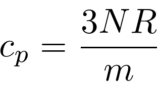
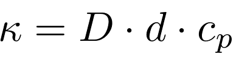
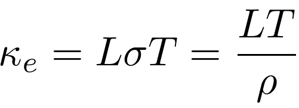
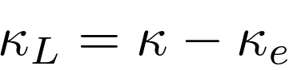
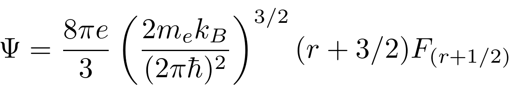
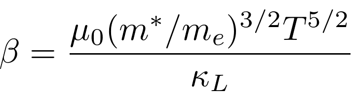
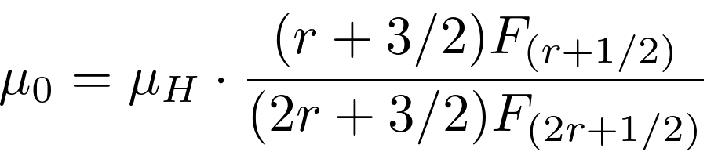

Reference: Equation 11.11 in [1]
An example of real usage of the Fermi integral:
Reference: Equation 11.1 in [1]
Reference: Equation 2 in [2] or a modified version of equation 11.20 in [1]
Reference: Equation 11.17 in [1] and equation 3 in [2]
Reference: Equation 11.23 in [1] and equation 5 in [2]





Reference: Equation 11.26 in [1]

Reference: Equation 11.9 in [1]

Reference: Equation 11.14 in [1]
Note: Equation 11.2 in reference [1] is incorrect! n is used in the equation instead of η (eta)